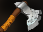
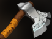

Dota 2 Builds
Alchemist
Преданность священной алхимии была традицией рода Темноваров, но никто еще никогда не показывал столько изобретательности, амбиций и безрассудства, сколько проявил юный Раззил. Повзрослев, он оставил семейное дело и решил попробовать себя в производстве золота. В присущей ему манере он объявил, что обратит в золото целую гору. Спустя два десятилетия исследований, вложений и подготовок он с треском провалился, попав за решетку за множественные разрушения, причиненные экспериментом. Однако Раззил был не из робкого десятка и тщательно обдумывал варианты побега, чтобы продолжить свои исследования. Когда его новым сокамерником оказался свирепый великан-людоед, алхимик увидел в нем столь желанную возможность для побега. Уговорив гиганта не съедать его, Раззил начал тщательно составлять настойку из плесени и мха, найденных во время исправительных работ. Через неделю она созрела. Когда великан выпил зелье, он впал в ослепительную ярость, разорвал железные прутья, разнес стены и перебил всю стражу. Скоро они затерялись где-то в лесу, окружавшем город, оставив за собой следы разрушений и никаких признаков погони. Когда действие тоника отошло, людоед чувствовал себя вполне хорошо и выглядел счастливым и вполне энергичным. Решив работать вместе, с тех пор парочка собирает материалы, необходимые Раззилу, чтобы в очередной раз попытать удачу.
Способности/Abulities
Acid Spray
Распыляет в указанной области облако кислоты, которое наносит врагам периодический урон и снижает их броню.

Способность: направленная на область/аура (с талантом)
Действует на: врагов/союзников (с талантом)
Тип урона: физический
Дальность применения: 900
Радиус: 475/525/575/625
Урон в секунду: 20/25/30/35
Снижение брони: 4/5/6/7 (Талант: 5/6/7/8)
Длительность задержки ауры: 0,5
Длительность: 16
Процент бонуса брони союзников: 0 (Талант: 100%)
Используя семейные рецепты рода Темноваров, Раззил получает едкую кислоту, которая разрушает даже самые прочные металлы.Unstable Concoction
Герой начинает встряхивать колбу с гремучей смесью, которую можно бросить во вражеского героя. При попадании колба взорвётся, оглушив всех противников в радиусе взрыва и нанеся им урон. Чем дольше смесь встряхивать, тем больше урона она нанесёт и тем дольше будет оглушение. Пока герой не бросит колбу, он передвигается быстрее. Максимальный эффект достигается после 5 сек., однако если не выбросить колбу через 5,5 секунды, она взорвётся в руках героя, подействовав и на него самого.Способность: направленная на юнита
Действует на: союзников/врагов
Тип урона: магический
Дальность применения: 550
Радиус взрыва: 675
Поглощение урона: 110/140/170/200 (Талант: 210/240/270/300)
Урон по области: 110/140/170/200 (Талант: 210/240/270/300)
Длительность: 15
Хоть превращение горы в золото и потерпело провал, благодаря ему была получена летучая микстура с разрушительным потенциалом.Unstable Concoction Throw
Способность: направленная на юнита
Действует на: врагов
Тип урона: физический
Дальность применения: 775
Бросайте, пока не взорвалось!Greevil's Greed
Позволяет синтезировать больше золота из врагов и рун. Дополнительное золото за убийство существ состоит из начального бонуса и нарастающего, который увеличивается с каждым существом, убитым в течение 36 сек. после предыдущего. Также способность умножает золото от рун богатства.Способность: Пассивная
Действует на: себя
Начальный бонус золота: 3
Доп. золото за стак: 3
Макс. доп. золото: 15/18/21/24
Время между убийствами: 36
Множитель руны богатства: 1,8/2,2/2,6/3
Бонус к урону от атаки за стак: 0 (Талант: 4,5)
Максимальный бонус к урону от атаки: 0 (Талант: 22,5/27/31,5/36)
Пускай эксперимент с горой и не удался, зато структуры поменьше Раззил легко обращает в звонкую монету.Berserk Potion
Бросает в союзника зелье, которое применяет на него нормальное развеивание, увеличивает восстановление здоровья, а также ускоряет атаку и передвижение.Способность: направленная на юнита
Действует на: союзников
Дальность применения: 800
Доп. скорость атаки: 50
Восстановление здоровья: 40
Доп. скорость передвижения: 30
Длительность: 10
Для открытия способности требуется Aghanim's Shard.Chemical Rage
 Позволяет синтезировать больше золота из врагов и рун. Дополнительное золото за убийство существ состоит из начального бонуса и нарастающего, который увеличивается с каждым существом, убитым в течение 36 сек. после предыдущего. Также способность умножает золото от рун богатства.
Позволяет синтезировать больше золота из врагов и рун. Дополнительное золото за убийство существ состоит из начального бонуса и нарастающего, который увеличивается с каждым существом, убитым в течение 36 сек. после предыдущего. Также способность умножает золото от рун богатства.
Способность: ненаправленная
Действует на: себя
Время трансформации: 0,35
Задержка перед атакой: 1,2/1,1/1 (Талант: 1,1/1/0,9)
Доп. регенерация здоровья 50/75/100 (Талант: 100/125/150)
Доп. скорость передвижения: 40/50/60 (Талант: 90/100/110)
Длительность: 30
Варево, которым Раззил напоил огра для побега из тюрьмы, стало полезным в сражении зельем.Сборка/Builds
Начальный закуп:

 



Основные предметы:


YOUTUBE:GREYSHARK

YOUTUBE:GREYSHARK
ССЫЛКА НА ЭТУ СБОРКУ STEAM